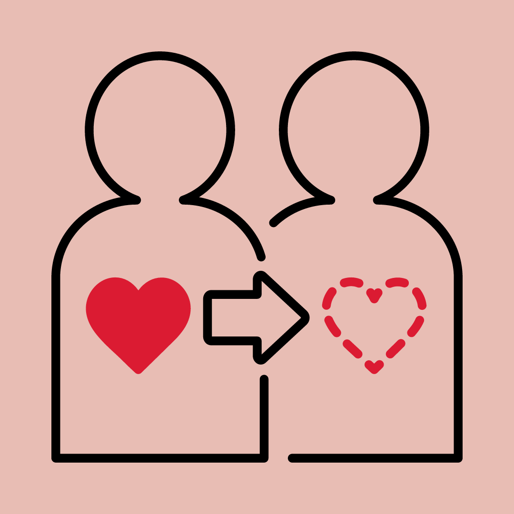

Junho Vermelho
É o mês da conscientização sobre a doação de sangue
Setembro é o mês da conscientização da importância da doação de órgãos
Como a coleta é realizada?
Para essa coleta ser realizada, primeiro é feito um exame de anemia.
Depois são verificados a pressão arterial, os batimentos cardíacos
e o peso do doador.
Em seguida são coletados 450 ml de sangue.
Quando a coleta é finalizada o doador recebe um lanchinho.